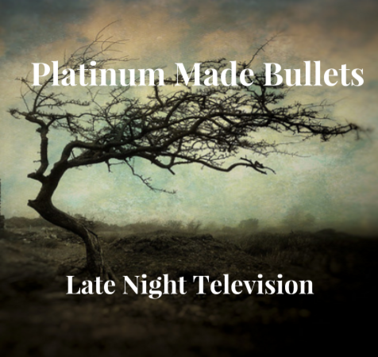

Challenge 5: Design A Band
Challenge information
Design thinking is the ability to imagine what someone else might be thinking or feeling.The steps of the DEEP design thinking process are being creative and deciding wether you create for yourself or with others in mind. If you are creating with others in mind then you must know what people want or need. My album cover was made from empathy survey results. Originally I made two album covers but I had people vote their favorite and used it for my cover. I also improved my album by using feedback from Rose, Thorn, and Bud testing. What this form of testing is is that Rose means that it's a good thing, Thorn means it's a bad thing, and Bud means an idea that someone have based off what you already have.
Album Cover
Band Biography
Band members Robert, Thomas, Fletcher, and Gordon formed this band in 2011. They originated from San Jose and these guys were already friends and really loved music. One day they decided to take their talents more seriously so they decided to play a gig at the Fairmont in San Jose. From there, they started to gain admiration from many and when they noticed this they took an advantage and made their first album "Platinum Made Bullets" in 2013.
The members were influnced by many artists and bands but their most favorite is 5 Seconds of Summer, especially their new album "Sounds Good Feels Good" which went #1 in over 76 countries. They weren't taken seriously as a band at first just like them but as time went by, they were praised and respected. One of the legends.